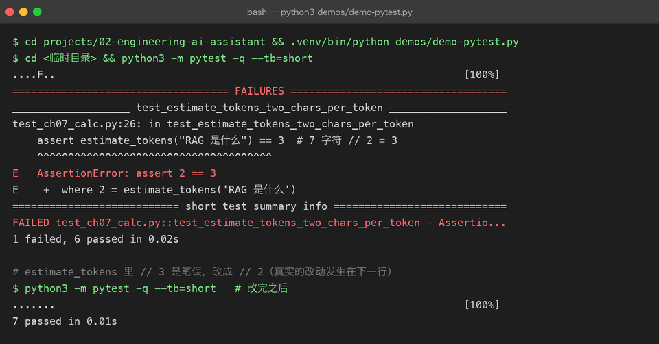
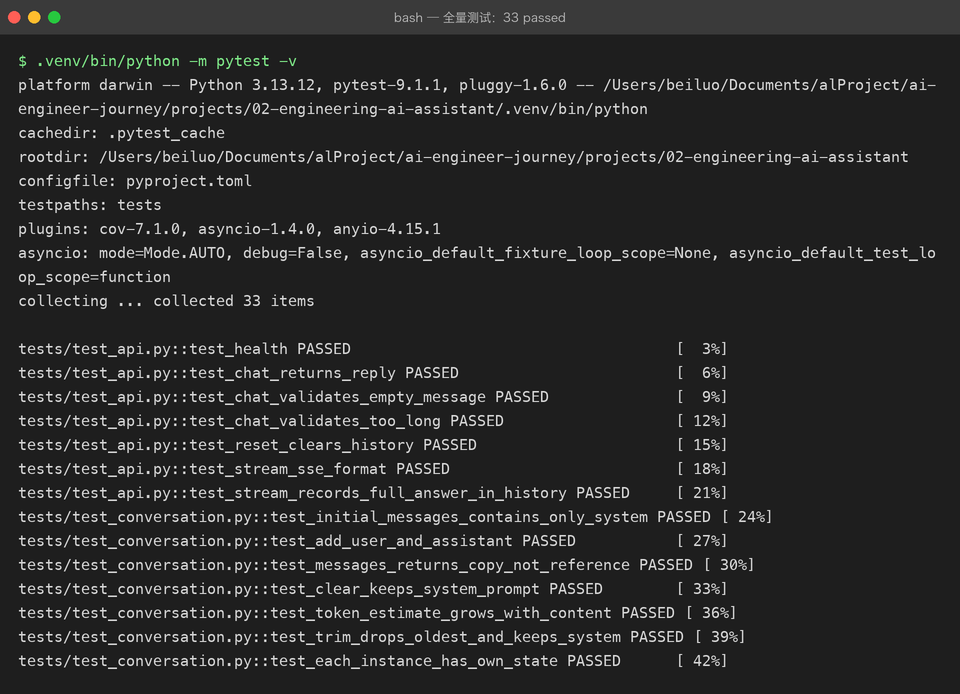

Project 02 — Chapter 07：Testing / Debugging【测试与调试】
状态：✅ 已校对 对应代码：
tests/
1. 项目要增加什么能力
Project 01 有 6 个 unittest，但只覆盖了「纯函数」：
def test_build_messages(self): ...
def test_parse_answer(self): ...真正有风险的地方一行没测：
风险 1：网络请求（超时、限流、401）—— 因为它真的要联网
风险 2：多轮对话历史是否正确累积
风险 3：重试逻辑到底重试了几次
风险 4：换一个 client 实现，上层还能不能跑为什么没测？因为代码写成了没法测的样子——LLMClient.ask() 里直接 urllib.request.urlopen，业务逻辑和网络调用焊死了。
本章目标：
用依赖注入 + Fake 对象，在不联网、不花一分钱的前提下，把上面四个风险全部测掉。
2. 为什么需要这个知识
对 AI 应用来说，测试不只是「防 bug」，还有三个更现实的理由：
1. 省钱 —— 每次跑测试都真调 API，一个月几百块打不住
2. 快 —— 真实调用 3-10 秒，Fake 是 0.001 秒；测试慢就没人跑
3. 确定性 —— 模型输出不固定，真调的测试会「偶发失败」，这种测试等于没有结论：AI 应用的测试必须能在完全离线的情况下验证业务逻辑。
这恰好是 Chapter 00 分层设计的回报——因为 AssistantService 只依赖 BaseLLMClient 抽象，我们就能塞一个假的进去。
3. 核心概念
3.1 pytest 基础
# tests/test_conversation.py
from assistant.conversation import Conversation
def test_add_user_appends_message():
conv = Conversation(system_prompt="你是助手")
conv.add_user("你好")
assert conv.messages == [
{"role": "system", "content": "你是助手"},
{"role": "user", "content": "你好"},
]和 Java 的对比：
@Test
void addUserAppendsMessage() {
Conversation conv = new Conversation("你是助手");
conv.addUser("你好");
assertEquals(List.of(...), conv.getMessages());
}关键差异：
pytest 用的是 Python 原生的
assert，不是assertEquals。 失败时 pytest 会展开表达式的每一步值，比 JUnit 的断言信息详细得多。
3.2 fixture：可复用的测试脚手架
import pytest
@pytest.fixture
def settings():
return Settings(api_key="test-key", base_url="http://localhost", model="test-model")
@pytest.fixture
def fake_client():
return FakeClient(reply="固定回答")
def test_service_ask(fake_client): # 参数名 = fixture 名
service = AssistantService(fake_client)
assert service.ask_sync("问题") == "固定回答"对应 JUnit 的 @BeforeEach，但更灵活：fixture 可以互相依赖、有作用域（function / module / session）。
3.3 Fake vs Mock
| 做法 | 适用场景 | |
|---|---|---|
| Fake | 写一个真的能用的简化实现（如 FakeClient 返回固定字符串） | 本项目首选 |
| Mock | 用 unittest.mock 造一个「记录调用、返回预设值」的替身 | 需要验证「有没有被调用、调了几次」 |
Fake 示例（推荐，因为直观且可复用）：
class FakeClient(BaseLLMClient):
def __init__(self, reply: str = "假回答", fail_times: int = 0) -> None:
self.reply = reply
self.fail_times = fail_times
self.calls: list[list[dict[str, str]]] = [] # 记录每次收到的 messages
async def chat(self, messages: list[dict[str, str]]) -> str:
self.calls.append(messages)
if len(self.calls) <= self.fail_times:
raise LLMRateLimitError("模拟限流")
return self.reply这一个 Fake 就能测三个东西：
def test_retry_on_rate_limit():
client = FakeClient(fail_times=2) # 前两次失败
... # 验证第 3 次成功
def test_history_accumulates():
client = FakeClient()
... # 验证 client.calls[1] 包含上一轮对话
def test_passes_system_prompt():
client = FakeClient()
... # 验证 client.calls[0][0]["role"] == "system"Mock 示例（需要验证「调用次数」时）：
from unittest.mock import AsyncMock
async def test_service_calls_client_once():
client = AsyncMock()
client.chat.return_value = "ok"
await AssistantService(client).ask("hi")
client.chat.assert_awaited_once()3.4 测异步代码
pytest 默认不认识 async def 测试。两种方案：
方案 A：pytest-asyncio（需要装依赖）
@pytest.mark.asyncio
async def test_async_ask():
result = await service.ask("hi")
assert result == "ok"方案 B：asyncio.run 包一层（零依赖，本项目可用）
def test_async_ask():
result = asyncio.run(service.ask("hi"))
assert result == "ok"还有一个好用的办法：给 service 同时提供 ask（async）和 ask_sync（同步包装），测试里一律用同步版：
def ask_sync(self, text: str) -> str:
return asyncio.run(self.ask(text))3.5 测试分层（金字塔）
╱╲ E2E：真的调一次 API（慢、花钱、少）
╱ ╲ 集成：FastAPI TestClient 打完整链路（中）
╱────╲ 单元：纯函数 + Fake 对象（快、多、离钱）
╱______╲比例建议：单元 70% / 集成 25% / E2E 5%。
E2E 要能被跳过（否则没网就跑不了 CI）：
@pytest.mark.skipif(not os.getenv("DEEPSEEK_API_KEY"), reason="需要真实 Key")
async def test_real_api():
...这个 skipif 很关键：CI 没有 Key 也能全绿，本地有 Key 就顺带验证真实链路。
3.6 调试：pdb 与 IDE
命令行断点：
def some_func():
breakpoint() # Python 3.7+，等价于 import pdb; pdb.set_trace()
...常用命令：n(下一行) / s(进入函数) / c(继续) / p 变量名(打印) / l(看代码) / q(退出)。
调试 async 代码时，await 处会在事件循环里跳来跳去，建议：
1. 先写一个同步的最小复现（把 async 函数用 asyncio.run 包起来）
2. 在纯逻辑部分加断点，而不是在 await 那一行4. 项目代码
tests/
├── conftest.py # 共享 fixture：settings / fake_client / service
├── test_conversation.py # 对话历史累积、裁剪
├── test_service.py # 业务逻辑（用 FakeClient，不联网）
├── test_settings.py # 配置解析、缺失 Key 报错
└── test_api.py # FastAPI TestClient（Chapter 09）运行：
pip install pytest pytest-asyncio
pytest -v # 全部
pytest tests/test_service.py -v # 单个文件
pytest -k "retry" -v # 按名字筛
pytest --cov=assistant # 覆盖率（需 pytest-cov）

5. Java ↔ Python 对比
| Java | Python | 说明 |
|---|---|---|
JUnit 5 @Test | def test_xxx() | pytest 靠命名约定 |
@BeforeEach | @pytest.fixture | fixture 更灵活，可组合 |
assertEquals(a, b) | assert a == b | pytest 失败信息更详细 |
assertThrows | pytest.raises(...) | 见下 |
@ParameterizedTest | @pytest.mark.parametrize | 同 |
Mockito mock() | unittest.mock.Mock / Fake 类 | Python 更常用手写 Fake |
@MockBean | 构造函数注入 Fake | 没有容器，手动传 |
| 无 | monkeypatch fixture | 临时替换环境变量/函数 |
pytest.raises 用法：
import pytest
def test_missing_key():
with pytest.raises(LLMConfigError, match="DEEPSEEK_API_KEY"):
Settings.from_env()monkeypatch 用法（测配置时不用真改环境变量）：
def test_reads_env(monkeypatch):
monkeypatch.setenv("DEEPSEEK_API_KEY", "sk-test")
settings = Settings.from_env()
assert settings.api_key == "sk-test"6. 常见坑
坑 1：测试文件不叫 test_*.py
pytest 只收集 test_*.py 或 *_test.py。写成 tests.py 会被静默忽略——没有任何报错，只是「0 tests collected」。
坑 2：测试之间互相污染
conversation_history = [] # ❌ 模块级可变状态，被所有测试共享用 fixture 保证每个测试拿到新的：
@pytest.fixture
def conv():
return Conversation(system_prompt="test")坑 3：真的在测试里调 API
def test_ask():
assert client.chat([...]) == "..." # 模型输出每次都不一样，必然偶发失败改成断言「结构性」而非「内容」：
def test_ask():
result = client.chat([...])
assert isinstance(result, str)
assert len(result) > 0坑 4：async 测试忘了 await
async def test_ask():
result = service.ask("hi") # ❌ 没 await，result 是 coroutine 对象
assert result == "ok" # 失败，而且不报错只说 !=Python 会警告 coroutine was never awaited。看到这个警告就要检查。
坑 5：asyncio.run 在已有事件循环里调用会报错
RuntimeError: asyncio.run() cannot be called from a running event loop发生在：在 async 测试里又调了 ask_sync。解决：测试全程用 async 版本。
7. 实战挑战
挑战 1：写 test_retry.py，用 FakeClient(fail_times=2) 验证「限流时重试 2 次后成功」，并断言总共调用了 3 次。
挑战 2：写 test_history.py，连续问两轮，断言第二轮发给 client 的 messages 包含第一轮的问答。
挑战 3（进阶）：给 FastAPI 应用写集成测试（TestClient），验证 POST /chat 返回 200 且包含预期字段——不联网。
8. 主动回忆
- Fake 和 Mock 的区别？本项目为什么优先用 Fake？
- 为什么 AI 应用的测试不能真调 API？
pytest.raises对应 Java 的什么？- 怎么让「需要真实 Key」的测试在无 Key 环境下自动跳过？
monkeypatch解决了什么问题？- 测试金字塔的三层比例大概是多少？
9. 本节完成标准
- [ ]
tests/下所有文件以test_开头 - [ ] 业务逻辑测试完全离线（用 FakeClient，不需要 Key）
- [ ] 覆盖：对话历史累积、重试、配置缺失报错、依赖注入替换实现
- [ ] 真实 API 的测试用
skipif保护，无 Key 时自动跳过 - [ ]
pytest -v全绿，且总耗时 < 2 秒
下一章：08-packaging.md —— 让它能被别人 pip install。